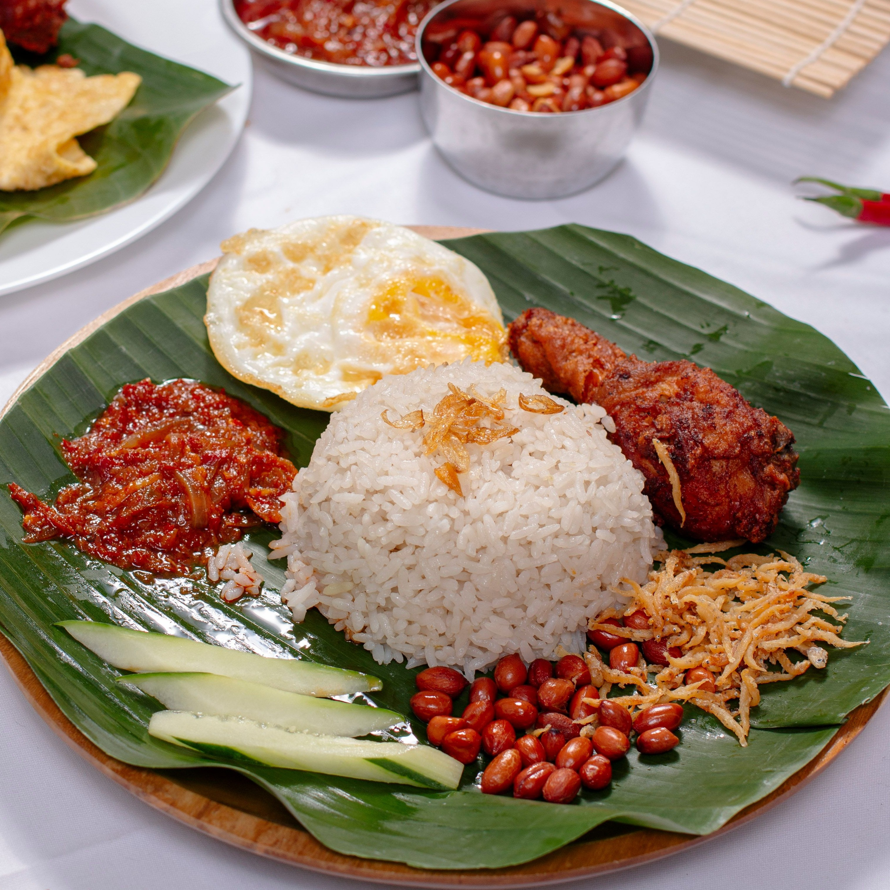

Welcome to my travel guide! Here are some of my favorite destinations and travel tips.
Destinations Foods to try Travel Tips
Malaysia is one of my favorite places to visit because of its beautiful scenery, food, and culture.
Learn more about Malaysia at Malaysia Travel
Here are some foods I recommend trying:

Follow these steps when planning a trip:
For more travel inspiration, visit National Geographic Travel .